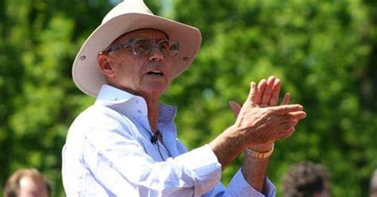

Aventurier, conférencier, auteur, conseiller privé d'hommes et de femmes d'affaires internationaux... il ne cesse de se renouveler et d'étonner !

Serge lors de l'une de ses activités en plein air.
Voici quelques informations sur l'extraordinaire Serge Marjollet:
Ses devises
Imaginer ! Oser ! S'amuser !
Etre bien marié, Avoir des enfants
Connaître l'absence de problèmes économiques.
Le possible offre peu d'intérêt, visez l'impossible !
Son état d'esprit
Dès le départ, Serge voue, à son existence et à sa recherche intérieure, un sens pragmatique qui doit être au service de la qualité de la Vie et de l’être humain.
Il s’amuse à décrypter les grandes Traditions mystiques du monde. Il découvre des centaines de Secrets laissés par les grands Sages de l’Histoire.
Serge agit comme un explorateur, parfois au péril de sa vie, vérifiant tout, repoussant sans cesse les limites de ses découvertes.
Auteur prolifique avec plus de 200 publications et 48 livres édités, il a aussi créé une vingtaine de formations totalement inédites !
Sa vie
Né en 1941 à Marseille, autodidacte, marié, père de famille, il parcourt le monde.
Une expérience mystique marque un tournant décisif dans sa vie grâce à Gurumayi à Rome.
Au prix de milliers d’heures de travail, il poursuit ses études et expériences dans la lignée de Franz Bardon. Il est le premier Initié de l’Ère du Verseau.
Il anime des conférences, séminaires, webinaires et formations, fondés sur sa propre expérience. Il conseille également une clientèle privée internationale.